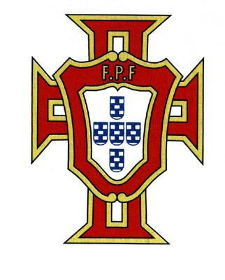

por Pedro Henrique B. N. Prado

A história de Portugal nas Copas do Mundo é curta e cheia de altos e baixos. O país esteve presente em apenas quatro edições do torneio. Em duas delas, foi semifinalista (1966 e 2006). Nas outras duas, não passou da primeira fase (1986 e 2002). Desta vez, os portugueses contam com um dos melhores jogadores do mundo em seu elenco para tentar voar mais alto: Cristiano Ronaldo.
A campanha nas eliminatórias foi desanimadora no início, mas o time do técnico Carlos Queiroz teve fôlego para reagir e buscar a vaga na repescagem, contra a Bósnia. Cristiano Ronaldo, por sinal, nem sequer foi a campo nos dois jogos mata-mata, por conta de uma lesão no tornozelo direito.
Quem teve papel importante na guinada de Portugal foi o atacante Liedson. Brasileiro naturalizado, o Levezinho, como é chamado pelos lusitanos, estreou num jogo decisivo contra a Dinamarca e fez o gol que decretou o empate por 1 a 1. Outros dois brasileiros de nascimento integram a seleção portuguesa: o zagueiro Pepe e o meia Deco.
Portugal será o terceiro adversário do Brasil na Copa do Mundo, dia 25 de junho, às 11h (de Brasília), pela última rodada do Grupo G